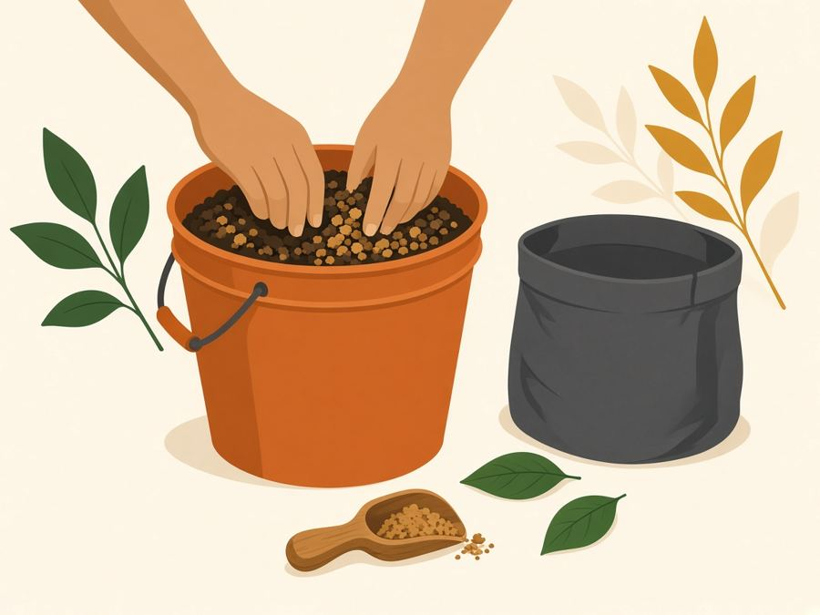
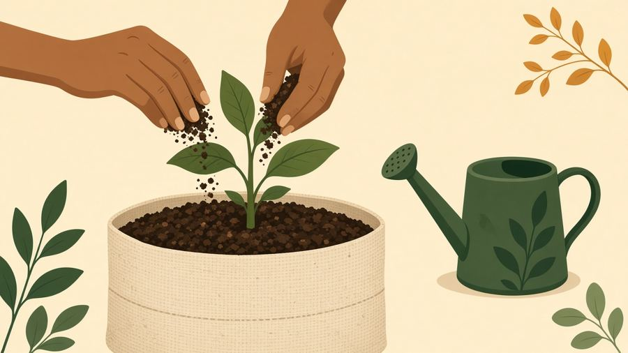

Starter mix at planting, then a flowering top-dress, for six autoflowers in 5-gal fabric grow bags.
Regular feeds
Dr. Earth Veg / Bloom and Neptune's Harvest are your regular feeds. Cut back the week you top-dress.
Base mix = your usual blend of Sunshine Mix #4, worm castings and Quoddy Blend (composted manure, sphagnum peat, aged bark, lobster & crab shell meal).
Starter Soil Mix
| Per 5-gal bag | Label rate | Your mix |
|---|---|---|
| Veg 4-6-3 | 1/4 cup (4 Tbsp) | 10 Tbsp (5/8 cup, 2.5 scoops) |
| Bloom 3-9-4 | 1/2 cup (8 Tbsp) | 6 Tbsp (3/8 cup, 1.5 scoops) |
Totals for all 6 bags
Veg: 60 Tbsp = 3 3/4 cups = 15 scoops
Bloom: 36 Tbsp = 2 1/4 cups = 9 scoops
Note
Your Veg is ~2.5x the label rate; if you see burnt or clawed tips early, drop toward 6-8 Tbsp next time.
Label check
Veg label (new plantings, potting soil): 1/4 cup per 1/2 cu ft (about 5 gal). Dr. Earth's cannabis Growers Guide also uses 1/4 cup Home Grown per 5-gal container, blended into the top 4 in.
Flower Girl label (flower containers, new plantings): 1/2 cup per ~5 gal potting soil, or 1 heaping Tbsp per quart.
- Veg is higher in N for early leaf and root growth.
- Bloom pre-loads P and K. Autos flip to flower on their own after a few weeks, and Dr. Earth is slow-release.
- Autos are light feeders. Too much Veg can burn roots and leave excess N in flower.
- Fill and mix your base blend.
- Measure Veg + Bloom for each bag.
- Mix thoroughly through the soil (or at least the top several inches).
- Fill the bag, leaving ~2 in headroom for the later top-dress.
- Water in. If you can, let it settle a few days before planting.
- Plant the seed.

Burnt or clawed tips early
Too strong.
Pale lower leaves early
May need more N. Check watering and pH first, before adding more dry amendment.
Next
When flowering starts, move to Part 2: the flowering top-dress.
Flowering Top-Dress
| Ingredient | Whole bucket | Per plant |
|---|---|---|
| Seabird Guano 0-11-0 (20% Ca) | 30 Tbsp = 7.5 scoops (about 2 cups) | 5 Tbsp |
| Langbeinite 0-0-22 (~10.8% Mg, 22% S) | 12 Tbsp = 3 scoops (3/4 cup) | 2 Tbsp (6 tsp) |
| Fill: Sunshine Mix #4 + Quoddy Blend Lobster Compost + worm castings | Fill to 5 gal | ~13 cups total mix |
Within label rates
Scoop = 1/4 cup = 4 Tbsp. Guano label is 1 Tbsp/gal monthly (5 Tbsp per 5-gal bag); langbeinite is 1-2 tsp/gal monthly for established plants (6 tsp per bag, in range).
- Add guano and langbeinite to the empty bucket.
- Fill to 5 gal with Sunshine Mix #4, Quoddy Blend and castings.
- Mix well until even, no clumps.
- Split into 6 equal portions, about 13 cups each.
Fewer plants?
Same per-plant amounts; make about 13 cups of mix per plant.
- Check headroom: 13 cups is a 1.5-2 in layer (you left ~2 in at planting).
- Lightly scratch the top inch of soil.
- Spread the portion evenly, keeping it away from the stem.
- Water in gently.

- Hold off or cut back Dr. Earth Bloom and Neptune's Harvest.
- Skip top-dressing in the final 2-3 weeks.
Round two: 3-4 weeks later, only if it lands before the last 2-3 weeks before harvest.
Burnt/crispy leaf tips
Too strong. Back off feeding, water plain.
Lower leaves yellowing late in flower
Normal fade. Leave it.
Yellowing early in flower
Could be hunger or a pH/watering issue. Check before adding more.
Charts & Timeline
| Cups | Tablespoons |
|---|---|
| 1 cup | 16 Tbsp |
| 3/4 cup | 12 Tbsp |
| 2/3 cup | ~10 2/3 Tbsp |
| 1/2 cup | 8 Tbsp |
| 1/3 cup | ~5 1/3 Tbsp |
| 1/4 cup (your scoop) | 4 Tbsp |
| 1/8 cup | 2 Tbsp |
| 1 Tbsp | 3 tsp |
- 1AT PLANTINGStarter mix: 10 Tbsp Veg + 6 Tbsp Bloom per bag.
- 2WHEN FLOWERING STARTSTop-dress: ~13 cups per bag (5 Tbsp guano + 2 Tbsp langbeinite).
- 33-4 WEEKS LATEROptional round 2, unless it falls in the final 2-3 weeks.
- 4FINAL 2-3 WEEKSNo top-dress.
STARTER MIX
- PER BAG
- 10 Tbsp Veg (2.5 scoops) + 6 Tbsp Bloom (1.5 scoops).
- 6 BAGS
- 3 3/4 cups Veg (15 scoops) + 2 1/4 cups Bloom (9 scoops).
- MIX
- Blend in, leave ~2 in headroom, water in.
FLOWERING TOP-DRESS
- BUCKET
- 7.5 scoops guano + 3 scoops langbeinite + soil mix to 5 gal.
- PER PLANT
- ~13 cups (5 Tbsp guano + 2 Tbsp langbeinite).
- APPLY
- Scratch, spread, off the stem, water in.
- THAT WEEK / REPEAT
- Ease off Dr. Earth Bloom & Neptune's. Round 2 in 3-4 wks, never in the last 2-3 wks.